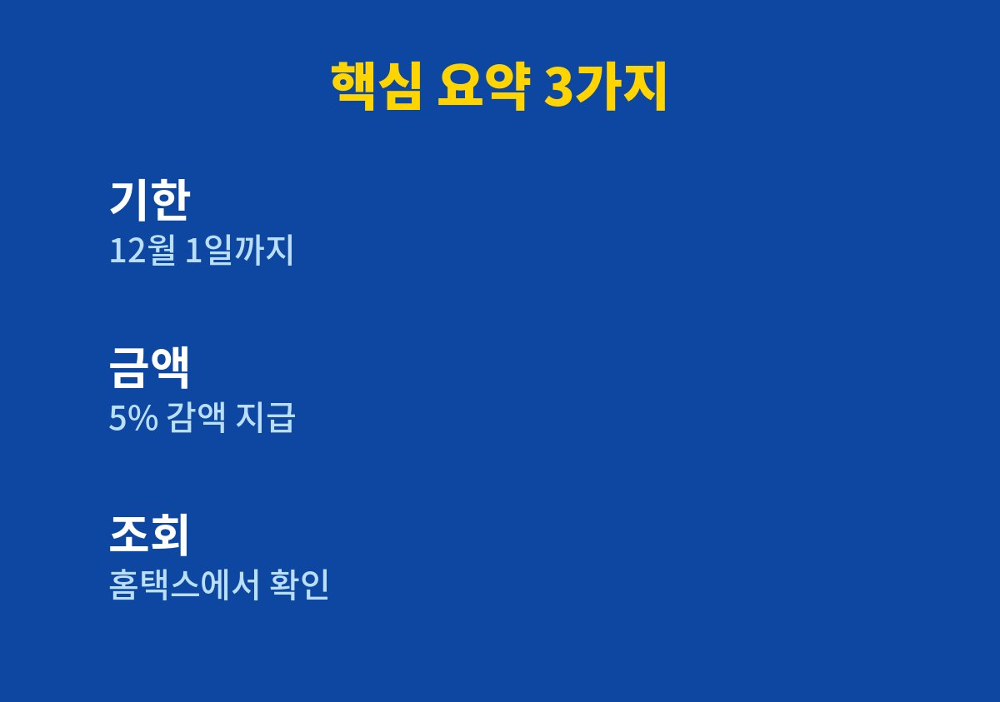
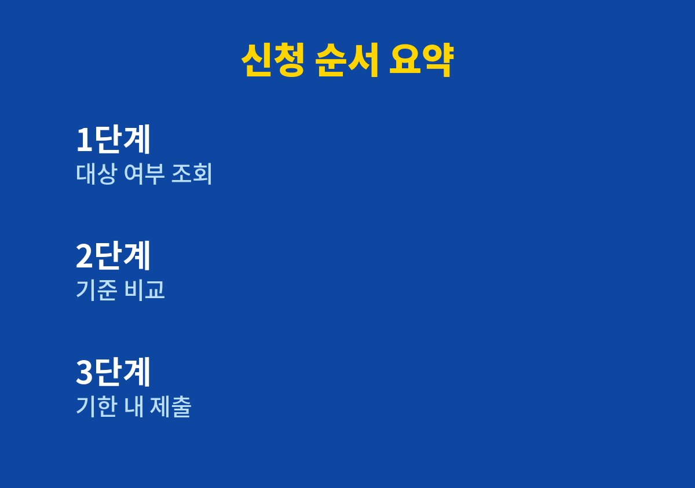

근로장려금 기한 후 신청은 2026년 12월 1일까지 가능하며, 이 경우 산정된 금액에서 5%가 감액되어 지급된다.
5월 정기 신청 기간을 놓쳐 근로장려금을 받지 못한 근로자·자영업자 가구라면 끝까지 읽어 볼 만하다.
2026년 11월 기준으로 내가 찾아보며 정리한 내용이다.
근로장려금은 일은 하고 있지만 소득이 많지 않은 가구에 국세청이 현금을 지급하는 제도다.
정기 신청은 5월에 받고, 이 기간을 지나친 가구는 12월 1일까지 기한 후 신청을 할 수 있다.
국세청이 아직 신청하지 않은 약 26만 가구에 안내문을 보낸다는 보도도 확인했다.
가족과 이야기하다 주변에 5월을 그냥 지나친 사람이 많다는 말을 듣고 궁금해서 찾아보았다.
5월에 신청하지 못하는 이유는 생각보다 단순해서, 일이 바빴거나 대상인 줄 몰랐거나 신청 방법이 낯설었기 때문인 경우가 많다.
이런 가구는 연말이 가까워질수록 마음이 급해지기 쉬워 미리 정리해 두는 것이 중요하다.
기한 후 신청은 정해진 기간에 낸 신청과 달리 지급액이 5% 줄어든다.
다만 마감인 12월 1일이 지나면 올해분은 신청 자체가 어려우므로 일정부터 계산해 두는 편이 좋다.
기한 후 신청이라 해도 대상 여부를 따지는 기준 자체는 정기 신청과 크게 다르지 않다고 안내된다.
감액이 아깝더라도 신청하지 않아 아무것도 받지 못하는 상황과는 비교가 필요하다.
국세청 홈택스나 모바일 앱 손택스에서 장려금 대상 여부를 먼저 조회해 볼 수 있다.
안내문을 받았다면 그 문서에 적힌 안내에 따라 같은 방식으로 확인하면 된다.
조회 결과에 대상으로 나오지 않더라도 기준 시점이나 가구 구성이 달라서일 수 있으니 안내 문구를 끝까지 읽어 보는 것이 좋다.
결과 화면의 문구는 그대로 캡처해 두면 나중에 문의할 때 도움이 된다.
근로장려금은 단독가구, 홑벌이가구, 맞벌이가구처럼 가구 형태에 따라 소득과 재산 기준이 달라진다.
정확한 숫자는 해마다 조정될 수 있어 이 글에서는 적지 않고 국세청 공고에서 확인해야 한다고 안내한다.
근로소득이나 사업소득이 있는 가구가 중심이 되며, 소득이 전혀 없는 경우는 대상에서 빠질 수 있다.
집이나 예금 같은 재산이 일정 금액을 넘으면 소득이 낮아도 제외될 수 있다는 점도 함께 기억해 두어야 한다.
| 항목 | 내용 |
|---|---|
| 신청 기한 | 2026년 12월 1일까지 |
| 지급액 조정 | 기한 후 신청은 5% 감액 |
| 신청처 | 국세청 홈택스·손택스, 관할 세무서 |
| 금액·소득 기준 | 가구 유형별로 달라 공식 공고에서 확인 |

표에 없는 금액과 소득 기준은 확인하지 못한 항목이라 일부러 적지 않았다.
잘못된 숫자를 믿고 판단하는 것보다 비워 두고 공식 출처로 안내하는 쪽이 읽는 분께 더 안전하다고 생각했다.
실제 금액은 홈택스 조회 결과와 국세청 공고가 가장 정확하다.
1. 안내문이나 홈택스에서 올해 대상 여부를 먼저 조회한다.
2. 가구 구성원과 주민등록상 가구 형태를 확인한다.
3. 소득과 재산 자료가 기준에 맞는지 공식 공고와 비교한다.
4. 12월 1일 전에 홈택스나 손택스로 신청서를 제출한다.
5. 제출 뒤 결정 결과와 지급 시기를 같은 경로에서 확인한다.
각 단계에 특별한 준비물은 없으니 휴대전화와 본인 인증 수단만 미리 챙겨 두면 도움이 된다.
중간에 막히는 부분이 있으면 관할 세무서나 국세청 상담 창구에 문의하는 방법도 있다.

마감 며칠 전에는 접속이 몰려 지연될 수 있어 여유를 두고 신청하는 편이 낫다.
대신 신청해 주겠다며 개인정보를 요구하는 연락은 따르지 않는 것이 안전하다.
신청은 국세청 공식 경로에서 본인이 직접 하는 것이 원칙이다.
근로장려금 기한 후 신청은 대상 여부 조회가 가장 먼저이고, 마감일 계산이 그다음이다.
조금 번거롭더라도 오늘 한 번 조회해 보는 것만으로 연말의 선택지가 분명해진다.
※ 2026년 11월 기준 공개된 정보를 정리한 글이며, 정확한 대상 요건·금액·신청 기간은 복지로·정부24·관할 주민센터의 공식 공고를 확인하시길 바란다.